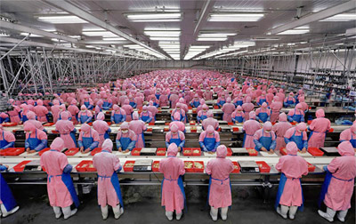

How to Read a Picture
Critical viewing skills:
Just as writers have particular perspectives and techniques to get their message across, artists also use images to convey ideas. In fact, images can convey powerfully messages that words cannot. Artists also use various techniques to get their messages across. A picture may be worth a thousand words, but you need to know how to analyze the picture to gain any understanding of it!
Images are constructed.
Always keep in mind that an image is constructed. Even before photos could be digitally altered, a photographer selected time, place, camera angle, focal point, and various other features to create an image in a particular way. Photographs are constructed just like paintings, sculptures, and other mediums. Images have meaning. Images are created for reasons, and artists have messages that they want to convey. They use many techniques to get their messages across.
Many clues are given in an image to assist you, the viewer, to determine the artist's message. When you look at an image, look for details that answer the following:
- What dominates this image?
- Who are the people in this picture? What are they doing?
- What feelings are conveyed by the subject(s)?
- Where did this occur?
- When did it occur?
- How does the title or any accompanying text relate to the image?
- What is the artist’s explicit, implicit, and/or symbolic message?
- For the purposes of this course, what does the image have to do with the topic?
- What perspective does the image represent?
Consider this image, titled Manufacturing #17:

Now, notice how one student answered these questions:
- What dominates the image?
The large numbers of factory workers - Who the people are in the image and what they are doing?
Lots of factory workers, all dressed the same, all doing the same work - What feelings are conveyed by the subject?
Monotony—because they are all dressed the same, it's like they are robots and not real people. It also seems a little bit frightening because the people seem so dehumanized. - Where did this event occur?
Without more information, it's impossible to say. It's very industrialized, so it could be in the developed world, but I don't think many factories in the developed world have so much sameness or so many workers - When did event occur?
In the modern day as shown by the lighting and industrialized features, plus the use of plastics - The title
Manufacturing #17 supports the idea of the inhuman aspect of the large factory. It doesn't tell what is being manufactured, or where it is. It's just a number. - The artist's message
Industrialization is dehumanizing. The people are all dressed the same. Hoods cover their heads and masks cover their faces, so you can't see any individual features, ethnicity, or whatever. Hundreds of identical people are in this picture, all doing the same work, back and to the sides as far as the eye can see. - What does it have to do with globalization?
Industrialization increases with globalization. The more nations industrialize, and the larger the markets they cater to, the more factories like this exist. The more corporations and countries focus on profits, rather than people, the less the concern for individualism. - What perspective does it represent?
I would say this image is from an anti-globalization perspective because it shows how individual cultures and identities are sacrificed to make money.